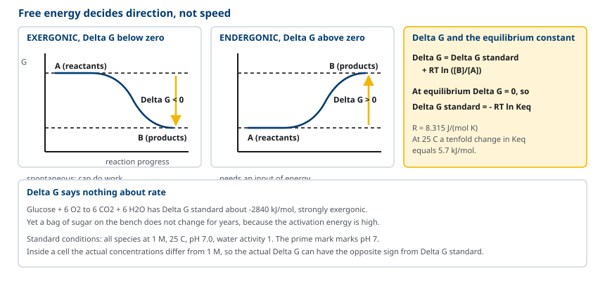
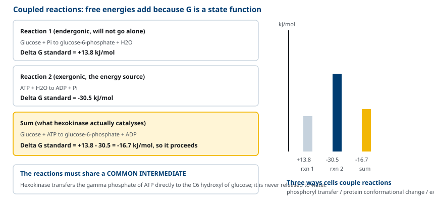
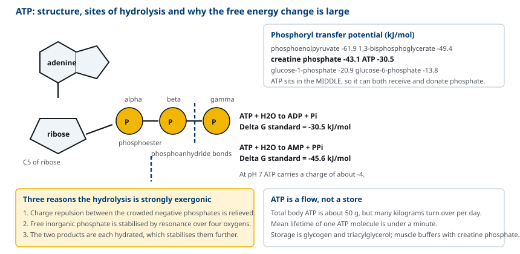
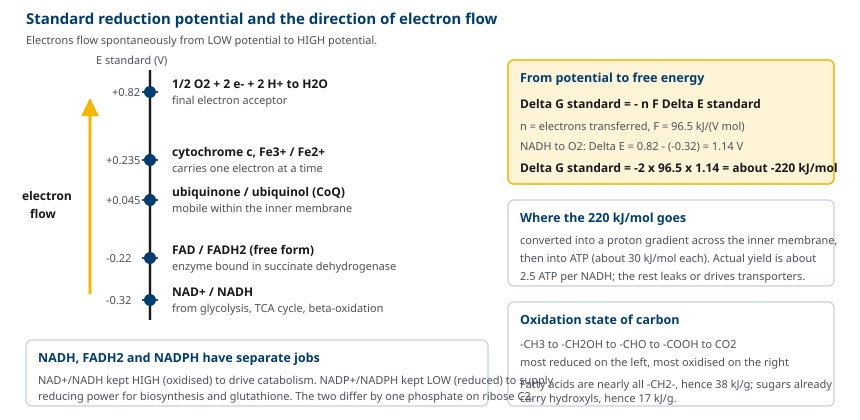
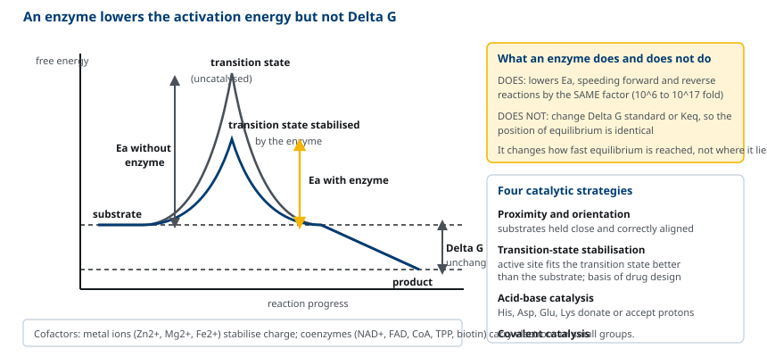

M01-W09-L02 · 인체일반생물학과 기초세포생물학
생체에너지: 자유에너지와 ATP
Bioenergetics: Free Energy and ATP
학습목표
- 열역학 제1·2법칙이 열린 체계인 세포에 적용되는 방식을 설명한다.
- 자유에너지 변화 ΔG와 평형상수 Keq의 관계를 식으로 쓰고 반응의 방향을 판정한다.
- 표준 조건의 ΔG°′와 세포 내 실제 ΔG가 다를 수 있는 이유를 농도항으로 설명한다.
- 짝반응의 원리를 공통 중간체 개념으로 설명하고 ΔG를 합산해 전체 반응의 진행 가능성을 판정한다.
- ATP의 구조와 가수분해 자유에너지가 큰 이유를 세 가지 근거로 설명한다.
- 산화환원 전위로 전자의 흐름 방향을 예측하고 NADH·FADH₂·NADPH의 역할을 구분한다.
- 효소가 활성화 에너지를 낮추는 기전을 설명하고 효소가 평형상수를 바꾸지 못하는 이유를 밝힌다.
선수지식
- M01-W05-L02 생체분자와 막의 구조 — 비공유 상호작용, 엔트로피, 단백질의 3차 구조
- M01-W05-L01 세포의 기원·진화와 세포 연구 방법 — 발효와 oxidative phosphorylation의 에너지 수확 차이
강의 구성
- 1. 세포와 열역학의 두 법칙
- 2. 자유에너지 변화와 평형상수
- 3. 짝반응과 공통 중간체
- 4. ATP의 구조와 가수분해 자유에너지
- 5. ATP 이외의 고에너지 화합물과 에너지 전달
- 6. 산화환원 반응과 전자 전달의 방향
- 7. 효소의 촉매 작용과 활성화 에너지
- 8. 효소 활성의 조절과 대사 경로의 제어점
1. 세포와 열역학의 두 법칙
세포는 끊임없이 분자를 만들고 농도기울기를 유지하고 움직인다. 이 모든 일에 에너지가 들어간다. 생체에너지학(bioenergetics)은 세포가 에너지를 어떻게 얻고 쓰는지를 열역학의 언어로 다룬다.
제1법칙은 에너지가 생기거나 사라지지 않고 형태만 바뀐다는 것이다. 광합성 세포는 빛 에너지를 포도당의 화학결합 에너지로 바꾸고, 동물 세포는 그 화학결합 에너지를 ATP로, ATP를 다시 근수축의 기계적 일이나 농도기울기로 바꾼다. 어느 단계에서도 에너지의 총량은 보존된다.
제2법칙은 고립된 체계의 엔트로피가 늘어나는 방향으로만 자발적 변화가 일어난다는 것이다. 그런데 세포는 질서 있는 구조를 만들고 유지한다. 아미노산이 흩어져 있는 상태보다 특정 서열로 이어진 단백질이 훨씬 질서 있다. 이것이 제2법칙에 어긋나지 않는 이유는 세포가 열린 체계이기 때문이다. 세포는 영양소를 받아들이고 열과 작은 분자를 내보낸다. 세포 내부의 엔트로피가 줄어드는 대신 주변의 엔트로피가 더 크게 늘어나므로, 세포와 주변을 합한 전체의 엔트로피는 증가한다.
이 균형을 하나의 양으로 다루기 위해 자유에너지(Gibbs free energy) G를 쓴다. 일정한 온도와 압력에서
ΔG = ΔH − TΔS
ΔH는 엔탈피 변화(열의 출입), ΔS는 엔트로피 변화, T는 절대온도다. 판정은 간단하다.
- ΔG < 0: 자발적으로 진행한다(exergonic). 일을 할 수 있다.
- ΔG > 0: 저절로 진행하지 않는다(endergonic). 에너지를 넣어야 한다.
- ΔG = 0: 평형이다. 정반응과 역반응의 속도가 같다.
중요한 구분이 하나 있다. ΔG는 반응이 일어날지를 말하고, 얼마나 빨리 일어날지는 말하지 않는다. 포도당이 CO₂와 물로 산화되는 반응의 ΔG는 −2,840 kJ/mol로 매우 음수이지만, 설탕 봉지는 상온에서 몇 년이 지나도 변하지 않는다. 속도는 활성화 에너지가 정하며 그 문제는 8절에서 다룬다.

2. 자유에너지 변화와 평형상수
A ⇌ B 반응을 생각한다. 자유에너지 변화는 두 항의 합이다.
ΔG = ΔG°′ + RT ln ([B]/[A])
ΔG°′는 표준 자유에너지 변화로, 모든 반응물과 생성물의 농도가 1 M, 온도 25°C, pH 7.0, 물의 활동도가 1인 조건에서의 값이다. 생화학에서는 pH 7을 기준으로 삼으므로 프라임 기호를 붙인다. R은 기체상수 8.315 J/(mol·K)이고, T는 절대온도다.
평형에서는 ΔG = 0이고 [B]/[A]가 평형상수 Keq이므로
ΔG°′ = −RT ln Keq
이 관계는 두 양 사이를 왕복할 수 있게 한다. 25°C에서 ΔG°′가 10배 변할 때마다 Keq는 약 5.7 kJ/mol씩 바뀐다.
| Keq | ΔG°′ (kJ/mol, 25°C) | 해석 |
|---|---|---|
| 10⁻³ | +17.1 | 생성물이 거의 생기지 않는다 |
| 10⁻¹ | +5.7 | 반응물이 우세하다 |
| 1 | 0 | 반응물과 생성물이 같다 |
| 10 | −5.7 | 생성물이 우세하다 |
| 10³ | −17.1 | 거의 완전히 진행한다 |
| 10⁶ | −34.2 | 사실상 비가역이다 |
ΔG°′와 실제 ΔG를 혼동하면 안 된다. ΔG°′는 고정된 상수이고, ΔG는 그때그때의 농도에 따라 달라지는 값이다. 세포 안에서 어떤 반응이 어느 방향으로 가는지는 ΔG°′가 아니라 ΔG가 정한다.
구체적인 예를 본다. Glycolysis의 첫 이성질화 반응, glucose-6-phosphate ⇌ fructose-6-phosphate의 ΔG°′는 +1.7 kJ/mol이다. 표준 조건이라면 역방향이 우세하다. 그러나 적혈구에서 두 물질의 실제 농도는 각각 약 83 μM과 14 μM이고, 이를 식에 넣으면
ΔG = 1.7 + (8.315 × 10⁻³)(310) ln(14/83) ≈ 1.7 − 4.6 ≈ −2.9 kJ/mol
즉 세포 안에서는 정방향으로 진행한다. 다음 반응이 fructose-6-phosphate를 계속 소비해 농도를 낮게 유지하기 때문이다. 대사 경로가 끊임없이 흐르는 것 자체가 각 반응을 정방향으로 밀어주는 조건이 된다.
3. 짝반응과 공통 중간체
세포가 해야 하는 일 가운데 많은 것은 ΔG가 양수다. 아미노산을 이어 단백질을 만들고, 농도기울기를 거슬러 이온을 옮기고, 작은 분자를 큰 분자로 조립하는 일이 모두 그렇다. 세포는 이런 반응을 ΔG가 크게 음수인 반응과 짝지어 진행한다.
원리는 자유에너지가 상태 함수라는 데 있다. 두 반응을 이어 붙이면 전체 ΔG는 두 ΔG의 합이다. 예를 보자.
Glucose + Pᵢ → glucose-6-phosphate + H₂O, ΔG°′ = +13.8 kJ/mol ATP + H₂O → ADP + Pᵢ, ΔG°′ = −30.5 kJ/mol
두 반응을 더하면
Glucose + ATP → glucose-6-phosphate + ADP, ΔG°′ = −16.7 kJ/mol
전체 ΔG°′가 음수이므로 진행한다. 실제로 hexokinase가 이 반응을 촉매한다.
여기서 중요한 조건이 있다. 단순히 두 반응이 같은 세포에 있다는 것으로는 짝지어지지 않는다. ATP가 따로 가수분해되어 열이 나고 glucose의 인산화가 따로 진행되지 않으려면, 두 반응이 하나의 효소 활성 부위에서 공통 중간체를 거쳐 일어나야 한다. Hexokinase는 ATP의 γ-인산기를 물에 넘기지 않고 glucose의 C6 hydroxyl기에 직접 넘긴다. 즉 짝반응은 인산기라는 공통 중간체를 공유한다.
생체의 짝반응은 세 가지 방식으로 나타난다.
- 인산기 전이: ATP의 인산기를 기질로 옮겨 기질을 활성화한다(hexokinase, phosphofructokinase).
- 단백질 구조 변화: ATP가 결합하고 가수분해되면서 단백질의 구조가 순차적으로 바뀌고, 그 구조 변화가 일을 한다(myosin의 운동, Na⁺/K⁺-ATPase의 이온 수송).
- 기울기와의 교환: 한 물질의 농도기울기가 내려가는 힘으로 다른 물질을 올린다(SGLT1, ATP synthase).

4. ATP의 구조와 가수분해 자유에너지
ATP(adenosine triphosphate)는 세포의 에너지 통화다. 구조는 세 부분이다. 염기 adenine, 당 ribose, 그리고 ribose의 C5에 이어진 세 개의 인산기다. 인산기는 ribose에서 멀어지는 순서로 α, β, γ라 부른다.
인산기 사이의 결합은 phosphoanhydride 결합이다. ATP는 두 개를 갖고(α-β, β-γ), ADP는 한 개를 갖는다. ribose와 α-인산 사이는 phosphoester 결합이다.
가수분해는 두 지점에서 일어날 수 있다.
- ATP + H₂O → ADP + Pᵢ, ΔG°′ = −30.5 kJ/mol
- ATP + H₂O → AMP + PPᵢ, ΔG°′ = −45.6 kJ/mol
γ-인산기가 떨어지는 첫 반응이 대부분의 반응에 쓰인다. 왜 이 반응의 ΔG°′가 이렇게 음수인가. 세 가지가 함께 작용한다.
1. 전하 반발: pH 7에서 ATP는 −4의 전하를 띠고, 음전하가 좁은 공간에 몰려 있어 서로 반발한다. 가수분해로 조각이 나뉘면 이 반발이 줄어든다. 2. 생성물의 안정화: 떨어져 나온 무기인산(Pᵢ)은 공명으로 전자가 네 산소에 분산되어 안정하다. ATP의 γ-인산은 β-인산과 결합해 있어 이 공명이 제한된다. 3. 수화(hydration): 생성물 ADP와 Pᵢ는 각각 물 분자로 둘러싸여 안정화되는데, 결합해 있는 ATP 한 분자보다 두 조각의 수화 안정화가 더 크다.
ATP는 중간 정도의 인산기 전이 능력을 갖는다는 점이 중요하다. 세포 안의 인산화합물을 가수분해 ΔG°′ 순서로 늘어놓으면 ATP는 중간에 있다.
| 화합물 | 가수분해 ΔG°′ (kJ/mol) |
|---|---|
| Phosphoenolpyruvate | −61.9 |
| 1,3-Bisphosphoglycerate | −49.4 |
| Creatine phosphate | −43.1 |
| ATP → ADP + Pᵢ | −30.5 |
| Glucose-1-phosphate | −20.9 |
| Glucose-6-phosphate | −13.8 |
| Glycerol-3-phosphate | −9.2 |
이 순서가 ATP의 역할을 설명한다. 위쪽 화합물들은 ADP에 인산기를 넘겨 ATP를 만들 수 있고(substrate-level phosphorylation), ATP는 아래쪽 화합물에 인산기를 넘길 수 있다. ATP가 중간에 있으므로 받는 쪽과 주는 쪽 양방향으로 모두 작동한다. 만약 ATP가 가장 높은 전이 능력을 가졌다면 대사가 ATP를 만들 길이 없고, 가장 낮았다면 ATP가 다른 분자를 활성화할 수 없다.

ATP는 저장 물질이 아니다. 사람의 체내 ATP 총량은 약 50 g에 불과하지만 하루에 회전하는 양은 체중과 활동량에 따라 수십 kg에 이른다. ATP 한 분자의 평균 수명은 1분 미만이다. 즉 ATP는 만들어지는 즉시 소비되는 흐름이며, 에너지 저장은 glycogen과 triacylglycerol이 담당한다. 근육에서는 creatine phosphate가 ATP를 몇 초 동안 보충하는 완충 장치로 쓰인다. Creatine kinase가 creatine phosphate + ADP ⇌ creatine + ATP를 촉매하는데, creatine phosphate의 전이 능력(−43.1)이 ATP(−30.5)보다 높아 ATP 쪽으로 반응이 기운다.
5. ATP 이외의 고에너지 화합물과 에너지 전달
세포는 ATP만 쓰지 않는다. 같은 원리의 다른 화합물들이 특정 경로에 전용된다.
- GTP: 단백질 합성에서 ribosome의 각 단계와 G protein 신호 전달에 쓰인다. TCA cycle의 succinyl-CoA synthetase도 GTP를 만든다.
- UTP: 당의 활성화에 쓰인다. UDP-glucose가 glycogen 합성의 기질이다.
- CTP: 인지질 합성에서 CDP-diacylglycerol, CDP-choline을 만든다.
가수분해 ΔG°′는 모두 ATP와 비슷하고, nucleoside diphosphate kinase가 ATP와 자유롭게 인산기를 교환하므로 세포 전체의 에너지 상태는 하나로 연결된다.
Thioester 결합도 고에너지 결합이다. Acetyl-CoA의 가수분해 ΔG°′는 −31.4 kJ/mol로 ATP와 비슷하다. 그래서 acetyl-CoA의 acetyl기는 다른 분자로 전이될 수 있고, TCA cycle의 첫 반응인 citrate synthase 반응이 그 전이를 이용한다.
세포의 에너지 상태는 하나의 숫자로 요약할 수 있다. 에너지 충전율(energy charge)이다.
energy charge = ([ATP] + ½[ADP]) / ([ATP] + [ADP] + [AMP])
값은 0(모두 AMP)에서 1(모두 ATP) 사이다. 대부분의 세포는 0.8~0.95로 좁은 범위를 유지한다. ATP를 쓰는 효소는 충전율이 높을 때 활성이 높고, ATP를 만드는 효소는 충전율이 낮을 때 활성이 높다. 이 역방향 조절이 충전율을 일정하게 붙든다.
조절의 민감도에는 생화학적 이유가 있다. Adenylate kinase가 2 ADP ⇌ ATP + AMP를 평형에 가깝게 유지하므로, ATP가 조금만 줄어도 AMP는 비율로 크게 늘어난다. 그래서 세포는 ATP 농도보다 AMP 농도를 에너지 부족의 신호로 쓴다. AMP-activated protein kinase(AMPK)가 AMP에 반응해 에너지를 쓰는 합성 경로를 끄고 에너지를 만드는 분해 경로를 켜는 것이 이 설계의 결과다.
6. 산화환원 반응과 전자 전달의 방향
에너지를 내는 대사 반응의 대부분은 산화환원 반응이다. 산화는 전자를 잃는 것, 환원은 전자를 얻는 것이다. 유기분자에서는 전자가 수소와 함께 움직이는 경우가 많아, 수소를 잃는 것이 산화, 얻는 것이 환원으로 나타난다.
탄소의 산화 상태는 결합 상대로 정해진다. 탄소가 수소와 결합하면 환원된 상태, 산소와 결합하면 산화된 상태다. 아래로 갈수록 산화된 상태이고, 산화될 여지가 적을수록 꺼낼 수 있는 에너지가 적다.
-CH₃(가장 환원) → -CH₂OH → -CHO → -COOH → CO₂(가장 산화)
이 순서가 영양소의 에너지 밀도를 설명한다. 지방산은 긴 -CH₂- 사슬로 거의 모두 환원된 상태이므로 g당 에너지가 크고(약 38 kJ/g), carbohydrate는 탄소마다 hydroxyl기가 붙어 이미 부분적으로 산화되어 있으므로 작다(약 17 kJ/g).
전자가 어느 방향으로 흐를지는 표준 환원 전위(standard reduction potential, E°′)가 정한다. E°′는 어떤 물질이 전자를 받으려는 경향을 전압으로 나타낸 값이다. 전자는 E°′가 낮은 쪽에서 높은 쪽으로 자발적으로 흐른다.
| 반쪽반응 | E°′ (V) |
|---|---|
| NAD⁺ + 2e⁻ + H⁺ → NADH | −0.32 |
| FAD + 2e⁻ + 2H⁺ → FADH₂ (유리 상태) | −0.22 |
| Ubiquinone + 2e⁻ + 2H⁺ → ubiquinol | +0.045 |
| Cytochrome c (Fe³⁺ + e⁻ → Fe²⁺) | +0.235 |
| ½O₂ + 2e⁻ + 2H⁺ → H₂O | +0.82 |
전위 차이와 자유에너지는 다음 식으로 연결된다.
ΔG°′ = −nF ΔE°′
n은 옮겨진 전자 수, F는 Faraday 상수 96.5 kJ/(V·mol)이다. NADH에서 O₂까지 전자 두 개가 흐를 때 ΔE°′ = 0.82 − (−0.32) = 1.14 V이므로
ΔG°′ = −2 × 96.5 × 1.14 ≈ −220 kJ/mol
이 220 kJ/mol이 electron transport chain에서 양성자 기울기로 전환되고, 다시 ATP 합성에 쓰인다. ATP 합성에 약 30 kJ/mol이 드므로 이론상 7분자 분량이지만 실제 수확은 약 2.5분자다. 차이는 양성자 기울기의 누출과 다른 용도(수송체 구동)로 설명된다.

NADH, FADH₂, NADPH는 역할이 나뉘어 있다. 구조는 비슷하지만 쓰이는 곳이 다르다.
| 운반체 | 주요 공급원 | 주요 용도 | 세포 내 비율 |
|---|---|---|---|
| NADH | glycolysis, TCA cycle, β-oxidation | electron transport chain으로 전자 전달 → ATP 생산 | NAD⁺/NADH가 높다(산화형 우세) |
| FADH₂ | succinate dehydrogenase, acyl-CoA dehydrogenase | 효소에 결합한 상태로 ubiquinone에 전자 전달 | 효소 결합형 |
| NADPH | pentose phosphate pathway, malic enzyme | 환원적 생합성(지방산, cholesterol), 항산화(glutathione 환원) | NADP⁺/NADPH가 낮다(환원형 우세) |
NAD⁺와 NADP⁺는 ribose의 C2 인산기 하나만 다르다. 이 작은 차이로 효소가 둘을 구별하고, 세포는 분해 경로용 전자 운반체와 합성 경로용 전자 운반체의 산화·환원 상태를 따로 유지한다. 분해 경로가 활발해 NADH가 많아져도 생합성용 NADPH 공급이 거기에 끌려가지 않는다.
7. 효소의 촉매 작용과 활성화 에너지
반응이 자발적이라는 것과 실제로 일어난다는 것은 다르다. 반응물이 생성물로 바뀌려면 결합이 재배치되는 불안정한 중간 상태, 즉 전이 상태(transition state)를 지나야 한다. 반응물에서 전이 상태까지 올라가야 하는 에너지가 활성화 에너지(activation energy, E_a)다.
활성화 에너지가 크면 전이 상태에 도달할 만큼의 열운동 에너지를 가진 분자가 적어 반응이 느리다. 체온은 37°C로 고정되어 있고 열을 더할 수 없으므로, 세포는 다른 방법을 쓴다. 효소는 활성화 에너지를 낮춘다.
효소가 하는 일과 하지 못하는 일을 구별해야 한다.
- 하는 일: 활성화 에너지를 낮춘다. 그래서 정반응과 역반응의 속도를 같은 비율로 올린다. 반응 속도를 10⁶~10¹⁷배까지 올릴 수 있다.
- 하지 못하는 일: ΔG°′와 Keq를 바꾸지 못한다. 평형의 위치는 반응물과 생성물의 자유에너지 차이로만 정해지고, 효소는 그 두 지점의 높이를 바꾸지 않는다.
효소가 활성화 에너지를 낮추는 방식은 네 가지로 정리된다.
- 근접과 배향(proximity and orientation): 기질들을 활성 부위에 붙잡아 반응할 원자끼리 가깝고 올바른 각도가 되게 한다. 용액에서 무작위 충돌에 의존할 때보다 유효 농도가 크게 올라간다.
- 전이 상태의 안정화: 활성 부위는 기질보다 전이 상태와 더 잘 맞도록 되어 있다. 전이 상태를 결합으로 안정화하면 그 높이가 낮아진다. 전이 상태 유사체가 강력한 억제제가 되는 이유가 여기에 있다.
- 산-염기 촉매: 활성 부위의 His, Asp, Glu, Lys 등이 양성자를 주고받아 불안정한 전하를 중화한다. Chymotrypsin의 His57-Asp102-Ser195 삼중체가 그 예다.
- 공유결합 촉매: 효소가 기질과 일시적으로 공유결합을 이루어 반응을 두 개의 낮은 장벽으로 나눈다.
보조인자가 필요한 경우가 많다. 금속 이온(Zn²⁺, Mg²⁺, Fe²⁺)은 전하를 안정화하거나 기질을 배향시키고, 보조효소(NAD⁺, FAD, coenzyme A, thiamine pyrophosphate, biotin)는 전자나 작은 기를 운반한다. 수용성 비타민은 대부분 보조효소의 전구체이며, 그래서 비타민 결핍이 특정 효소 반응의 결손으로 나타난다.

8. 효소 활성의 조절과 대사 경로의 제어점
대사 경로가 세포의 필요에 맞게 작동하려면 효소의 활성이 조절되어야 한다. 조절은 작동 속도가 다른 여러 층위에서 일어나며, 경로의 특정 지점에 집중된다.
조절이 모이는 지점은 어디인가. 두 조건을 만족하는 반응이다. 첫째, 생리적 조건에서 비가역이다. 즉 ΔG가 크게 음수여서 평형에서 멀리 떨어져 있다. 둘째, 경로에서 처음으로 그 경로에만 쓰이는 반응이다(committed step). 이런 반응을 촉매하는 효소가 경로 전체의 유입량을 정하므로 rate-limiting step이라 부른다. Glycolysis에서는 phosphofructokinase-1이, cholesterol 합성에서는 HMG-CoA reductase가 그 자리에 있다.
조절 방식은 네 가지다.
| 방식 | 작동 시간 | 기전 | 보기 |
|---|---|---|---|
| 기질·생성물 농도 | 즉시 | 질량작용으로 ΔG가 바뀐다 | 모든 효소 |
| Allosteric 조절 | 밀리초~초 | 활성 부위가 아닌 부위에 조절자가 결합해 구조를 바꾼다 | PFK-1이 ATP·citrate에 억제, AMP·F2,6BP에 활성화 |
| 공유결합 변형 | 초~분 | 인산화·탈인산화 등 | glycogen phosphorylase, AMPK 표적 |
| 효소량 변화 | 시간~일 | 전사 조절, 단백질 분해 | HMG-CoA reductase, 유도성 효소 |
Allosteric 조절은 되먹임을 구현하는 방식이다. 경로의 최종 산물이 첫 효소를 억제하면(feedback inhibition) 산물이 쌓일 때 경로가 저절로 느려진다. 조절자가 기질과 구조적으로 닮을 필요가 없으므로, 경로의 산물이 아니라 세포의 에너지 상태나 다른 경로의 중간체가 조절자가 될 수 있다. PFK-1이 ATP와 citrate에 억제되고 AMP에 활성화되는 것은, glycolysis의 속도를 포도당 농도가 아니라 세포가 에너지를 필요로 하는지로 정하는 설계다.
경로의 방향성도 제어점의 배치로 만들어진다. 분해 경로와 합성 경로가 같은 중간체를 공유하면서 서로 반대 방향으로 갈 때, 두 경로는 비가역 단계에서 서로 다른 효소를 쓴다. Glycolysis의 phosphofructokinase-1과 gluconeogenesis의 fructose-1,6-bisphosphatase가 그 예다. 두 효소가 반대 방향으로 조절되므로, 한 경로가 켜질 때 다른 경로가 꺼진다. 두 경로가 동시에 작동하면 ATP만 소모되고 알짜 변화가 없는 무익한 순환(futile cycle)이 되기 때문이다.
확인 문항
어떤 반응의 ΔG°′가 +7.5 kJ/mol이다. 이 반응이 세포 안에서 정방향으로 진행할 수 있는지 판단하고 조건을 제시하라.
해설
진행할 수 있다. 실제 자유에너지 변화는 ΔG = ΔG°′ + RT ln([생성물]/[반응물])이므로, 농도항이 충분히 음수이면 ΔG가 음수가 된다. 체온 310 K에서 RT는 약 2.58 kJ/mol이고, +7.5를 상쇄하려면 ln 항이 −2.9보다 작아야 하므로 생성물/반응물 비가 약 0.055, 즉 1:18 미만이어야 한다. 세포에서 이 조건은 다음 반응이 생성물을 빠르게 소비할 때 만족된다. 실제 예로 glucose-6-phosphate에서 fructose-6-phosphate로의 이성질화는 ΔG°′가 +1.7 kJ/mol이지만 적혈구의 실제 농도비에서 ΔG가 약 −2.9 kJ/mol이 되어 정방향으로 흐른다.
ATP의 가수분해 자유에너지가 인산화합물 중 가장 큰 값이 아니라 중간 정도인 것이 세포에 유리한 이유를 설명하라.
해설
ATP가 인산기를 받는 쪽과 주는 쪽 양방향으로 작동할 수 있기 때문이다. Phosphoenolpyruvate(−61.9 kJ/mol)나 1,3-bisphosphoglycerate(−49.4)처럼 전이 능력이 더 큰 중간체는 ADP에 인산기를 넘겨 ATP를 만들 수 있고, ATP(−30.5)는 glucose-6-phosphate(−13.8)처럼 전이 능력이 낮은 화합물을 만들어 기질을 활성화할 수 있다. 만약 ATP가 가장 높은 전이 능력을 가졌다면 대사 중간체로부터 ATP를 만들 길이 없고, 가장 낮았다면 ATP가 다른 분자에 인산기를 넘길 수 없다. 중간 위치가 양방향 전달을 가능하게 한다.
어떤 효소를 반응계에 넣으면 평형에 도달하는 시간이 짧아지지만 평형에서의 생성물 농도는 변하지 않는다. 그 이유를 에너지 다이어그램으로 설명하라.
해설
효소는 전이 상태를 결합으로 안정화해 반응물에서 전이 상태까지의 높이, 즉 활성화 에너지를 낮춘다. 그러나 반응물과 생성물 자체의 자유에너지 수준은 건드리지 않으므로 두 지점의 차이인 ΔG°′가 그대로 남는다. ΔG°′ = −RT ln Keq이므로 평형상수도 변하지 않고, 따라서 평형에서의 농도비도 변하지 않는다. 또한 활성화 에너지는 정반응과 역반응에 대해 같은 양이 낮아지므로 두 방향의 속도가 같은 비율로 올라간다. 결과적으로 효소는 평형의 위치가 아니라 평형에 이르는 속도만 바꾼다.
NAD⁺와 NADP⁺는 인산기 하나만 다른데도 세포는 둘의 산화·환원 상태를 따로 유지한다. 이 분리가 필요한 이유를 설명하라.
해설
분해 경로와 합성 경로가 서로 간섭하지 않게 하기 위해서다. NADH는 glycolysis, TCA cycle, β-oxidation에서 만들어져 electron transport chain에 전자를 넘겨 ATP를 만드는 데 쓰이므로, 세포는 NAD⁺/NADH 비를 높게(산화형 우세) 유지해 분해 반응이 계속 진행되게 한다. NADPH는 지방산과 cholesterol 합성 같은 환원적 생합성과 glutathione 환원에 쓰이므로, NADP⁺/NADPH 비를 낮게(환원형 우세) 유지해 환원력을 늘 공급할 수 있어야 한다. 두 보조효소가 같다면 한 비율로 통일되어 분해와 합성 중 한쪽이 불리해진다. C2 인산기 하나의 차이로 효소가 둘을 구별하므로 두 상태를 독립적으로 유지할 수 있다.
대사 경로에서 조절이 집중되는 지점이 가진 두 가지 특징을 쓰고, 왜 그 지점이어야 하는지 설명하라.
해설
첫째, 생리적 조건에서 비가역이다. ΔG가 크게 음수여서 평형에서 멀리 떨어져 있으므로 반응의 속도가 농도의 작은 변화에 끌려가지 않고 효소 활성에 의해 결정된다. 둘째, 경로에서 처음으로 그 경로에만 쓰이는 단계(committed step)다. 그 앞의 중간체는 여러 경로로 갈 수 있으므로 거기서 조절하면 다른 경로까지 함께 끄게 된다. 이 두 조건을 만족하는 반응의 효소가 경로 전체의 유입량을 정하므로 rate-limiting step이 되고, allosteric 조절, 인산화, 전사 조절이 그 효소에 모인다. Glycolysis의 phosphofructokinase-1이 대표적이다.
분해 경로와 합성 경로가 비가역 단계에서 서로 다른 효소를 쓰는 이유를 설명하라.
해설
두 경로를 독립적으로 조절하고 무익한 순환을 막기 위해서다. 비가역 단계는 ΔG가 크게 음수여서 같은 효소로는 역방향으로 돌릴 수 없으므로, 반대 방향에는 다른 반응과 다른 효소가 필요하다. 더 중요한 이유는 조절이다. Glycolysis의 phosphofructokinase-1과 gluconeogenesis의 fructose-1,6-bisphosphatase처럼 서로 다른 효소를 쓰면 한 효소를 활성화하는 신호가 다른 효소를 억제하도록 설계할 수 있다. 같은 효소가 양방향을 담당한다면 두 방향을 따로 켜고 끌 수 없다. 두 경로가 동시에 작동하면 ATP만 소모되고 알짜 변화가 없는 futile cycle이 되므로, 반대 방향 조절이 필수적이다.
허혈로 ATP 생산이 멈춘 세포에서 가장 먼저 나타나는 구조 변화가 세포 부종인 이유를 설명하라.
해설
안정 상태에서 세포 에너지의 상당 부분이 Na⁺/K⁺-ATPase에 쓰이고, 이 펌프가 Na⁺를 밖으로 K⁺를 안으로 옮겨 세포 내 삼투압을 세포 밖보다 낮게 유지한다. ATP가 고갈되면 1차 능동수송인 이 펌프가 먼저 멈춘다. 그러면 Na⁺가 전기화학적 기울기를 따라 세포로 들어오고 Cl⁻가 따라 들어와 세포 내 용질 농도가 올라가며, 삼투에 의해 물이 유입되어 세포와 소기관이 부푼다. 이 단계는 아직 가역적이지만, 이어 Ca²⁺가 유입되어 phospholipase와 protease를 활성화하고 막이 깨지면 비가역 손상이 된다. 이때 세포 내 단백질인 creatine kinase와 troponin이 혈액으로 새어 나와 손상 표지자로 검출된다.
참고문헌
- Cooper GM, Adams K. The Cell: A Molecular Approach. 9th ed. Oxford University Press; 2022. Chapter 3, Bioenergetics and Metabolism.
- Alberts B, Heald R, Johnson A, et al. Molecular Biology of the Cell. 7th ed. W.W. Norton; 2022. Chapter 2, Cell Chemistry and Bioenergetics; Chapter 3, Proteins.
- Nelson DL, Cox MM. Lehninger Principles of Biochemistry. 8th ed. Macmillan; 2021. Chapter 13, Bioenergetics and Biochemical Reaction Types.
- Atkinson DE. The energy charge of the adenylate pool as a regulatory parameter. Biochemistry 1968;7:4030–4034.
- Hardie DG, Ross FA, Hawley SA. AMPK: a nutrient and energy sensor that maintains energy homeostasis. Nat Rev Mol Cell Biol 2012;13:251–262.
- Wolfenden R, Snider MJ. The depth of chemical time and the power of enzymes as catalysts. Acc Chem Res 2001;34:938–945.